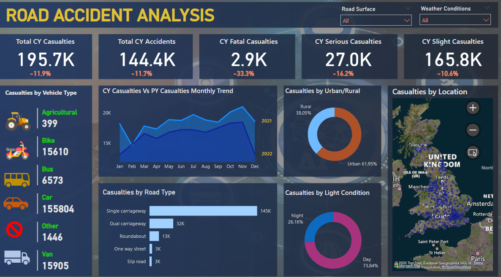
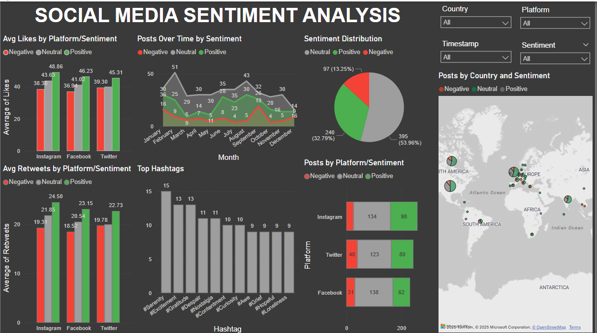
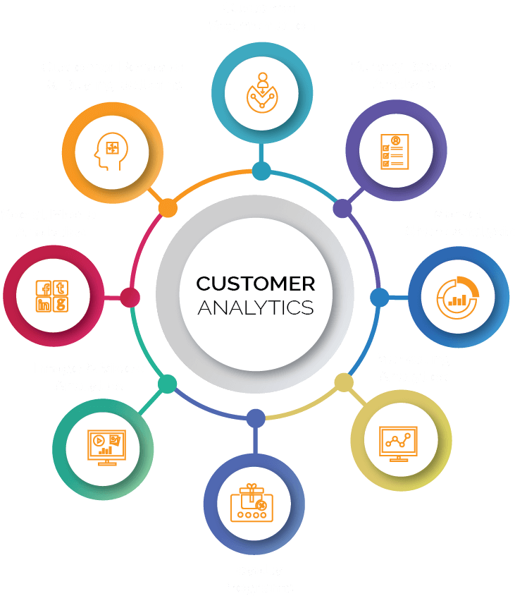

FEATURED PROJECT
Deep Learning • Computer Vision • Healthcare AI
Developed a MobileNet-based deep learning model for automated gastrointestinal disease detection from endoscopic images. The model classifies four disease categories using transfer learning techniques.
Key Results:
- 98% Test Accuracy
- 0.977 Cohen's Kappa Score
- 4-Class Classification - Normal, Ulcerative Colitis, Polyps, Esophagitis
- Transfer Learning - MobileNet + Custom Architecture
- Data Augmentation - Applied for better generalization
Technologies: Python, XGBoost, Streamlit, Scikit-learn
Built a machine learning web application for predicting High Entropy Alloy phases using ensemble methods. Features real-time predictions with confidence intervals and user-friendly interface.
Features: Deployed web application using 10+ physicochemical features with XGBoost algorithm

Technologies: Power BI, DAX, Excel, Geographic Mapping
Created a road accident analytics dashboard to identify accident patterns, locations, and severity distributions. Includes interactive maps and filtering capabilities for data exploration.
Analysis: Identified accident hotspots and time patterns for safety planning

Technologies: Python, TextBlob, Power BI, NLP, Pandas
Developed a social media analytics pipeline processing posts from Twitter, Facebook, and Instagram. Implemented sentiment analysis, hashtag analysis, and engagement pattern detection.
Scope: Analyzed 732 posts across 30+ countries with 1200+ hashtags processed

Technologies: Tableau, Excel, JSON, Data Classification
Completed Deloitte's virtual data analytics program involving factory telemetry analysis and employee equality assessment. Created interactive dashboards and data classification systems.
Completion: Successfully finished Deloitte Australia's virtual internship program

Technologies: Python, Pandas, Seaborn, Text Mining, Sentiment Analysis
Analyzed customer support tickets to identify service patterns, satisfaction factors, and areas for improvement. Generated recommendations for process optimization.
Results: Processed 382+ tickets with 7.5h avg resolution time analysis and satisfaction scoring

Technologies: Python, NLTK, TF-IDF, Naive Bayes, SMOTE, Streamlit
Developed an NLP pipeline for SMS spam detection with text preprocessing, feature engineering, and class balancing techniques to handle imbalanced datasets.
Performance: Achieved 98.39% accuracy with 94% precision/recall on 5,572 messages